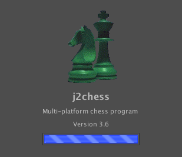
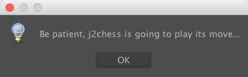
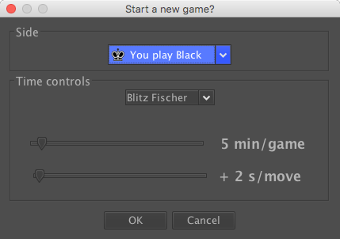
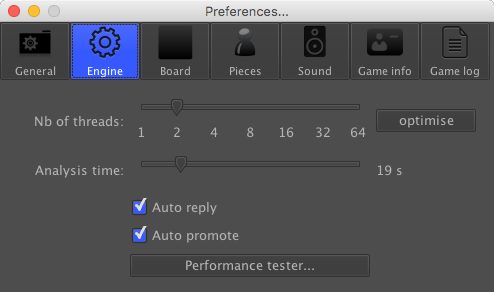
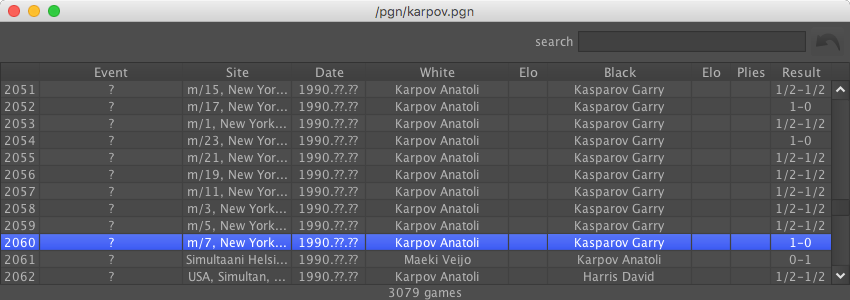
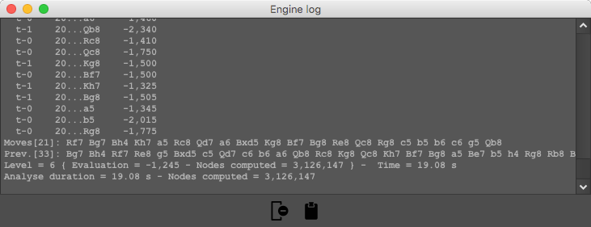
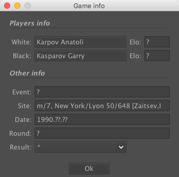

Welcome to the screens area!
Splash window
This is the window you can see during the launch of j2chess:

Startup game status dialogbox
If the "Restore previous board" option is enabled, tells the player if a game is in progress on j2chess startup:

Board
Main window of j2chess:
New game dialogbox
To choose your side and time controls option:

Preferences dialogbox
The dialogbox to update j2chess settings:

Library
A library window displays the game list of a ".pgn" file:

Engine log
An insider view of j2chess analysis/evaluation:

Game info
The current game info:
